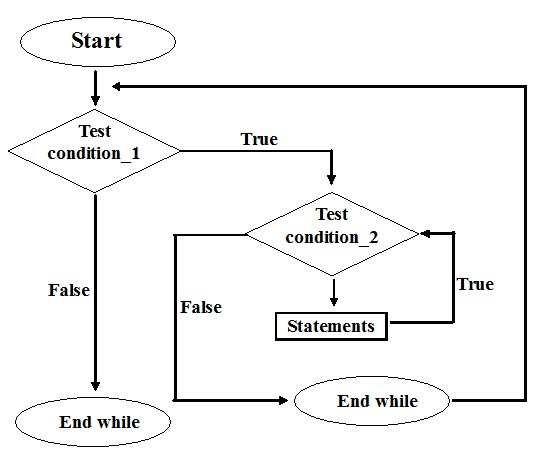

while loop
Syntax of while loop:while (condition test) { //Statements to be executed repeatedly // Increment (++) or Decrement (--) Operation }
Flow Diagram of while loop let count=1;
while (count <= 4)
{
console.log(count);
count++;
}
Output: 1 2 3 4
step1: The variable count is initialized with value 1 and then it has been tested for the condition.
step2: If the condition returns true then the statements inside the body of while loop are executed else control comes out of the loop.
step3: The value of count is incremented using ++ operator then it has been tested again for the loop condition.
Guess the output of this while loop
let i=1;
while (i <=2)
{
console.log(i)
}
}
The program is an example of infinite while loop. Since the value of the variable i is same
(there is no ++ or – operator used on this variable, inside the body of loop)
the condition var<=2 will be true forever and the loop would never terminate.
let count=1;
while (count <= 4)
{
console.log(count);
count++;
}
Output: 1 2 3 4
step1: The variable count is initialized with value 1 and then it has been tested for the condition.
step2: If the condition returns true then the statements inside the body of while loop are executed else control comes out of the loop.
step3: The value of count is incremented using ++ operator then it has been tested again for the loop condition.
Guess the output of this while loop
let i=1;
while (i <=2)
{
console.log(i)
}
}
The program is an example of infinite while loop. Since the value of the variable i is same
(there is no ++ or – operator used on this variable, inside the body of loop)
the condition var<=2 will be true forever and the loop would never terminate.
Examples of infinite while loop
Example 1: let var = 6; while (var >=5) { console.log(var); var++; } Infinite loop: var will always have value >=5 so the loop would never end. Example 2: let var =5; while (var <=10) { console.log(var) var--; } Infinite loop: var value will keep decreasing because of –- operator, hence it will always be <= 10.Use of Logical operators in while loop
Just like relational operators (<, >, >=, <=, ! =, ==), we can also use logical operators in while loop. The following scenarios are valid : while(num1<=10 && num2<=10) -using AND(&&) operator, which means both the conditions should be true. while(num1<=10||num2<=10) – OR(||) operator, this loop will run until both conditions return false. while(num1!=num2 &&num1 <=num2) – Here we are using two logical operators NOT (!) and AND(&&). while(num1!=10 ||num2>=num1) Example of while loop using logical operator In this example we are testing multiple conditions using logical operator inside while loop. let i=1, j=1; while (i <= 4 || j <= 3) { console.log('i is: '+i+' and j is: '+j) i++; j++; } Output: 1 1 2 2 3 3 4 4Exercises of while loop
print 1 to N numbers
let i=0, N;
N=parseInt(prompt('Enter an integer'));
while(i<=N){
console.log(i);
i=i+1;
}
console.log(i);
Write a program to calculate the sum of first 10 numbers
let i=0;sum=0;
while(i<=10){
sum=sum+1; // as sum+=1
i=i+1; // as i++
console.log(``) //show every step happening here inside loop
}
console.log('Sum is: '+sum);
print 20 horizontal asterisks (*)
let i=0, output='';
while(i<=19){
output+= '*'
i++;
}
console.log('value of i: '+i);
console.log(output);
write a program to calculate the sum of numbers from M to N
let M,N, sum=0;
M=parseInt(prompt('Enter starting point'));
N=parseInt(prompt('Enter ending point'));
while(M<=N){
sum=sum+M;
M=M+1;
}
console.log('sum is: '+sum);
write a program to display the largest of 6 numbers using ternay operator
let i = 0, large = -111, num;
while(i<=5){
num=Number(prompt('Enter a number'));
large=num>large? num:large;
}
console.log('largest number is: '+large);
write a program to read the numbers until -1 is encountered. Also count the negative, positive and zeros
let num, negatives=0, positives=0, zero=0;
num=parseInt(prompt('Enter -1 to exit\nEnter a number'))
while(num!=-1){
if(num>0){
positives++;
}
else if(num<0){
negatives++;
}
else{
zeros++;
}
num=parseInt(prompt('Enter -1 to exit\nEnter a number'))
}
console.log(``);
write a program to calculate the average of numbers entered by the user
Nested While Loop
In programming language, while loop inside another while loop is known as nested while loop. In nested while loop one or more statements can be included in the body of the loop. The syntax of nested whilewhile(test_expression) { statements; while(test_expression) { statements; } }
flow diagram of the nested while loop  Initially, Outer while loop executes only once. outer while loop evaluates the test expression. When the condition is false, The flow of control skips the execution and flow of control come out the outer loop for rest when the condition is true, the flow of control jumps to the inner while loop. Then, test expression evaluates the condition of the inner loop. if the test expression is true, inside the statements are executed If the test expression is false, the flow of control skips the execution and jumps out of the outer loop.Example of nested while loop
let i=1;
while(i<=3){
console.log(`${i}:inner loop is executed only once\n`);
let j=1;
while(j<=4){
console.log(`${j} :Outer loop is executed until to completion\n`);
j++;
}
i++;
}
print 1 to 10, 10 times in to rows
let i=1,j, output='';
while(i<=10){
j=1;
while(j<=10){
output+=j;
j++;
}
i++;
console.log(output+'\n');
output='';
}
output:
12345678910
12345678910
12345678910
12345678910
12345678910
12345678910
12345678910
12345678910
12345678910
12345678910
Rectangular star pattern printing using nested while loop
let i=1,j, output='';
while(i<=10){
j=1;
while(j<=10){
output+='*'
j++;
}
console.log(output+'\n')
i++;
output='';
}
When the above code is compiled and executed, it produces the following result:
output:
**********
**********
**********
**********
**********
**********
**********
**********
**********
**********
Multiplication table
let i=1,j, output='';
while(i<=10){
j=1;
while(j<=10){
output+=j*i+'\t'
j++;
}
i++;
console.log(output+'\n');
output=''
}
output:
1 2 3 4 5 6 7 8 9 10
2 4 6 8 10 12 14 16 18 20
3 6 9 12 15 18 21 24 27 30
4 8 12 16 20 24 28 32 36 40
5 10 15 20 25 30 35 40 45 50
6 12 18 24 30 36 42 48 54 60
7 14 21 28 35 42 49 56 63 70
8 16 24 32 40 48 56 64 72 80
9 18 27 36 45 54 63 72 81 90
10 20 30 40 50 60 70 80 90 100